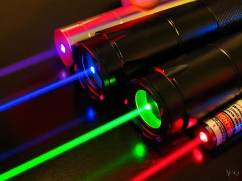
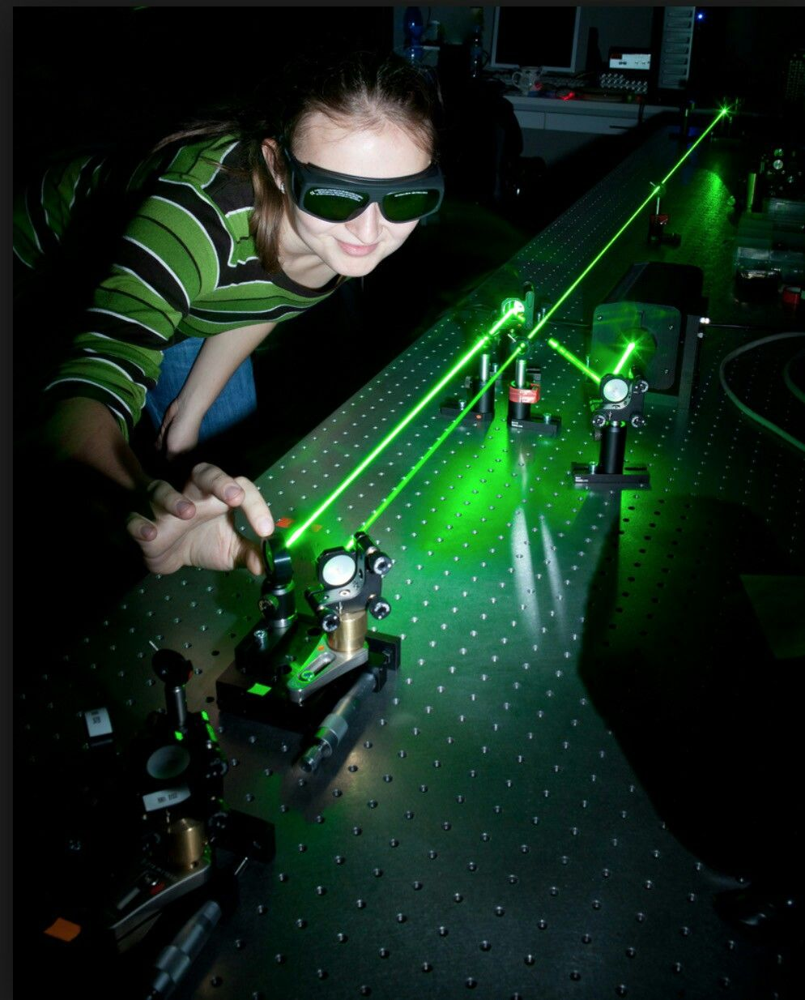

Лазерное излучение на производстве. Воздействие на человека. Профилактические мероприятия
Почему эта тема так важна?

Лазерные технологии сегодня — это основа современной промышленности: от точной резки металла до 3D-печати. Однако за высокой эффективностью скрывается невидимая опасность. Лазерный луч, способный плавить металл, может нанести непоправимый вред здоровью человека.
Причина первая — необратимость. Самое уязвимое место для лазерного луча — это глаз. Устройство глаза таково, что он сам, как линза, собирает луч в маленькую точку на сетчатке. Плотность энергии там становится во много раз больше, чем на поверхности кожи. А сетчатка — это ткань, которая не восстанавливается. Если лазерный луч попадёт в глаз, человек может потерять зрение навсегда.
Причина вторая — комплекс факторов. Рядом с лазерной установкой всегда есть и другие вредные факторы: высокое напряжение, загазованность воздуха (озон, оксиды азота), ультрафиолетовое и инфракрасное излучение от ламп накачки, шум, вибрация и электромагнитные поля.
Причина третья — закон. Требования законодательства обязательны. Лазеры делятся на классы опасности по ГОСТ 12.1.040-83, а уровни излучения на рабочих местах нормируются СанПиН 1.2.3685-21.
Модуль 1. Что такое лазерное излучение

Лазерное излучение создаётся в оптическом квантовом генераторе. У лазерного луча есть три важных свойства: монохроматичность (одна длина волны), когерентность (согласованность волн) и узконаправленность.
На производстве главную угрозу несут прямые пучки излучения, а также зеркально и диффузно отраженные лучи. Металлические, керамические и даже пластиковые поверхности могут отражать лазерный луч, направляя его в незащищенные зоны и глаза персонала. Опасность усугубляется тем, что лазерный луч невидим глазу, а его воздействие может быть незаметно до появления первых симптомов ожога.
Предлагаем посмотреть научно-популярный фильм о том, как устроены лазеры:
Модуль 2. Воздействие на человека
Когда луч попадает в ткань, его энергия поглощается и превращается в другие виды энергии (тепловой ожог, ударные волны, фотохимические реакции).
Принцип фокусировки луча на сетчатке
Плотность энергии на сетчатке возрастает в тысячи раз
Спектр поражения
Роговица, хрусталик
Сетчатка (необратимо)
Роговица, кожа
Глаза
Самая уязвимая часть. Лазерный луч фокусируется хрусталиком и может вызвать ожог сетчатки, кровоизлияние и мгновенную потерю зрения. Опасно даже отраженное излучение.
Кожа
Высокоинтенсивные лучи вызывают термические ожоги (от покраснений до обугливания), а также фотохимические реакции.
Центральная нервная система
Хроническое воздействие (даже рассеянного излучения) может приводить к повышенной утомляемости, раздражительности, вегетососудистой дистонии и нарушению сна.
Как лазер воздействует на сетчатку (сюжет РЕН ТВ)
Предлагаем посмотреть наглядный сюжет о том, как лазерный луч повреждает сетчатку глаза:
Модуль 3. Профилактические мероприятия
Комплексная защита: как снизить риски. Защита строится по принципу «от общего к частному»:
1. Коллективная защита
Ограждение лазерной зоны непрозрачными экранами (светофильтрами), блокировки дверей, предупреждающие знаки и сигнализация.

2. Средства индивидуальной защиты (СИЗ)
Использование специальных защитных очков и щитков (с маркировкой по длине волны лазера). Запрещено смотреть на лазерный луч без защиты. При работе с мощными установками применяют:
3. Организационные меры
Строгий инструктаж, допуск к работе только обученного персонала старше 18 лет, периодические медосмотры (офтальмолог, дерматовенеролог, невролог).
4. Дистанционное управление
Настройка и юстировка лазеров должны проводиться при выключенном оборудовании или с помощью дистанционных пультов.
Модуль 4. Правила работы и действия в ЧС

Перед началом работы
Необходимо проверить оборудование: исправность заземления, вентиляции, охлаждения и защитных блокировок. Рабочую зону очищают от лишних предметов, особенно от поверхностей, способных отражать луч.
Помещение и регламент
Помещение с лазерным оборудованием должно иметь предупреждающие знаки и обозначение опасной зоны. Работодатель обязан утвердить регламент. Сотрудникам запрещено отключать встроенные системы защиты, снимать кожухи или блокировать предохранительные механизмы.
Лазерный луч запрещено направлять на людей даже в шутку, поскольку последствия такой «игры» могут привести к тяжёлым травмам зрения и кожи.
Итог: безопасность требует дисциплины
Лазерное излучение — это мощный инструмент, требующий уважения. Безопасность на производстве зависит не только от исправного оборудования, но и от дисциплины каждого сотрудника. Соблюдение простых правил и использование СИЗ — единственный способ сохранить здоровье и зрение.
- Провести инвентаризацию установок и определить класс опасности.
- Оформить санитарный паспорт и установить знак опасности.
- Обеспечить коллективные средства защиты (экраны).
- Назначить ответственных за лазерную безопасность.
- Выдать СИЗ с учётом длины волны.
- Организовать медосмотры.
- Обучать персонал и не допускать к работе лиц младше 18 лет.
- Строго запрещать шутки с направлением луча на людей.